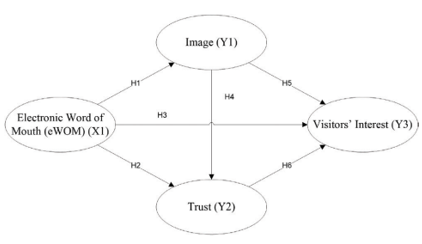

Ni Wayan Sumartini Saraswati
Desember, 2023
SENTIMENT ANALYSIS DALAM
BIG DATA ANALYTICS UNTUK PARIWISATA
Sentiment Analysis
Sentiment analysis merujuk kepada analisis untuk menentukan polaritas dari sebuah komentar atau review konsumen terhadap sebuah produk atau jasa. Polaritas dapat berupa komentar positif dan komentar negatif, beberapa penelitian juga menentukan polaritas netral pada kalimat komentar. Sentiment analysis lebih lanjut dapat pula menentukan aspek emosi dari kalimat opini tersebut seperti marah, sedih atau gembira.

Sentiment analysis, sumber : (Chandra, 2019)
Otomatisasi klasifikasi dari review konsumen akan terasa besar manfaatnya ketika kita berhadapan dengan big data. Banjir data review di internet memerlukan proses sentiment analysis untuk dapat menarik insight dari data tersebut.
Electronic Word of Mouth (e-WOM) merupakan sarana pemasaran yang efektif di dunia maya. Kekuatan brand dari produk perusahaan saat ini kebanyakan sangat bergantung dari e-WOM. Begitu juga dengan industri pariwisata. Keputusan untuk memilih akomodasi dan destinasi wisata saat ini mengandalkan review dari konsumen sebelumnya. Wisatawan memanfaatkan internet untuk mendapatkan informasi mengenai akomodasi yang tepat dan begitu juga untuk merancang itinerary. Hal ini sangat penting dilakukan untuk menghindari kerugian investasi waktu dan biaya dalam berwisata. Wisatawan yang puas maupun tidak puas juga meninggalkan jejak pengalaman dalam bentuk review baik di media sosial, platform perjalanan wisata, dan Online Travel Agent (OTA). Sehingga pengolahan dari review dapat memberikan gambaran citra dari destinasi wisata maupun layanan hospitality tersebut.
Pengaruh yang besar dari e-WOM didukung oleh penelitian di bidang pariwisata. Berdasarkan pengenalan polaritas review dari big data maka kita dapat memperoleh kepuasan dengan mengolahnya bersama karakteristik wisatawan (reviewer). Lebih jauh lagi kita bisa memperoleh citra pariwisata dan profil serta karakteristik wisatawan.

Pengaruh e-WOM, sumber (Aprilia & Kusumawati, 2021)
Berdasarkan hasil penelitian e-WOM memberikan pengaruh positif dan efek signifikan terhadap citra obyek wisata, kepercayaan wisatawan, dan minat pengunjung (Aprilia & Kusumawati, 2021).
Klasifikasi Teks untuk Sentiment analysis
Proses sentiment analysis untuk menentukan polaritas review merupakan proses klasifikasi teks. Proses ini diimplementasikan secara garis besar menggunakan dua pendekatan yaitu menggunakan teknik machine learning misalkan Naïve Bayes Classifier (NBC) dan Support Vector Machines (SVM) serta menggunakan teknik deep learning misalkan CNN dan RNN.
Metode deep learning merupakan evolusi dari metode jaringan saraf tiruan. Metode ini memberikan keunggulan dengan akurasi yang baik. Sedangkan kelemahan dari metode ini adalah membutuhkan data dalam jumlah besar untuk pelatihan dengan biaya pelatihan yang besar. Model yang dihasilkan dari metode deep learning merupakan black box sehingga sangat sulit untuk dipahami.

Perbedaan antara dua pendekatan klasifikasi dari polaritas sentimen, sumber (Dang et al., 2020)